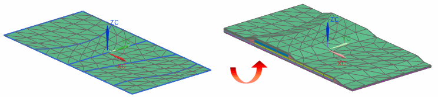

Use the Extrude Laminate command to create 3D layered meshes by extruding 2D meshes that are referenced by either laminate physical properties or by global layups. Each layered mesh can contain one or more plies.

The 3D elements are extruded in the direction of the 2D element normals. The thickness of each layer is taken from the plies referenced by the elements in the base 2D mesh.